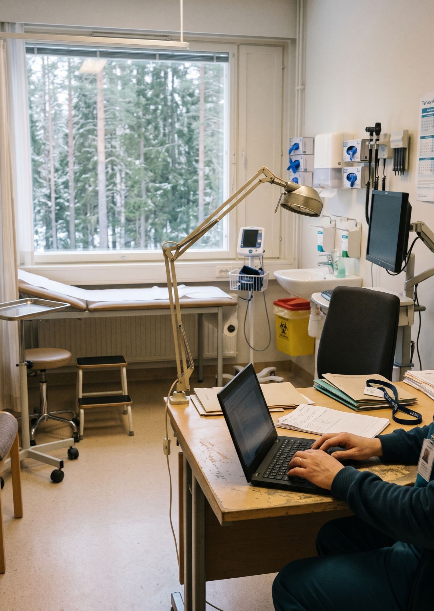

01 · Clinics
A specialist in your pocket.
GPs and dentists get an expert answer within 24 hours, without sending the patient anywhere.
- Answer within 24 hours
- A clear next step for every case
- Fewer unnecessary referrals

Demo · Junction 2026
OncoScan is a working demo of photo-first cancer triage. A patient sends photos of a worrying skin or mouth spot, and a cancer specialist reviews them. Pick a side to try it.
To see the full loop, send a case as a patient, then open the doctor panel in the same browser.
The gap
Finland's cancer specialists work in five university-hospital cities. Clinics are everywhere else. For a GP or dentist far from those cities, the hardest question, is this cancer?, means a referral and a long wait before a specialist even looks.
The delay starts at the very first step: detection and referral. That's the step OncoScan removes.
—
km from the farthest clinic on this map to its nearest university hospital
5
university-hospital cities hold the specialists
Distances are straight-line, calculated from city coordinates. Goal 3 of the National Cancer Strategy 2026–2035 sets the target for equal access.
Step by step
Add 1 or 2 photos of the spot and describe it. Takes 3 minutes.
€0 where your county has a contract. Otherwise one card payment.
A licensed cancer doctor studies your photos within 24 hours.
An email link opens your result and your next step.
Screens show example data. OncoScan resolves the suspicion; a final diagnosis is still made by biopsy.
Send a photoRegister with your number. We check it against Valvira's public register.
Judge 20 cases with known answers before the live queue opens.
Large photo, the patient's words and an AI pre-read. Mark each one: no concern, suspicious or can't tell.
A fixed fee for every signed verdict. Your total updates as you work.
Screens show example data.
Open specialist demoWho it's for

01 · Clinics
GPs and dentists get an expert answer within 24 hours, without sending the patient anywhere.
02 · Specialists
Cases arrive pre-sorted, with photos and symptoms in one view. One specialist reviews up to 20 cases an hour.
03 · Wellbeing services counties
Pay per case reviewed. Track days from first suspicion to specialist verdict, for every clinic in the county.
For patients An answer within 24 hours. Send a photo
Safety
A licensed specialist signs every verdict. The AI only sets priority.
Designed around the EU Medical Device Regulation and the AI Act's human-oversight requirements.
GDPR-compliant processing, hosted in the EU, shared only with the reviewing clinician.
Every specialist holds a licence to treat Finnish patients, granted by Valvira.
OncoScan builds on Oriscan, the oral-cancer review service already used by dental clinics in Latvia.
Roadmap
We start where the evidence is strongest and add each cancer type only after its own clinical validation.
Wave 1 · Now
Photo and dermoscopy images from dentists and GPs.
Wave 2
Photos, colposcopy images and structured symptoms.
Wave 3
Triage on lab values and imaging reports.
Start a pilot
No. OncoScan resolves the suspicion: a specialist confirms or clears the case within 24 hours. A final cancer diagnosis is still made by biopsy.
The licensed specialist who signs it, as with any consultation. The AI only sets the order in which cases are reviewed.
The county pays per case reviewed, or the patient pays by card. No hardware to buy: clinics use a phone or their existing camera.
Cases are processed under GDPR, hosted in the EU, and visible only to the submitting clinician and the reviewing specialist.
Oral cancer first, with skin next. Further types follow the roadmap as each is clinically validated.